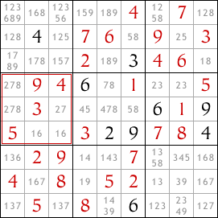
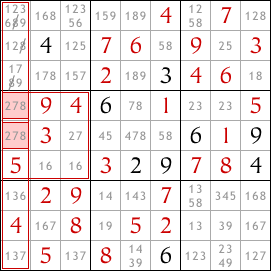
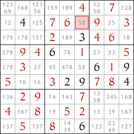
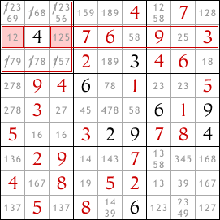
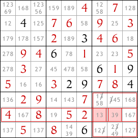

Sudoku difficile avec techniques expliquées
Les techniques de Singletons Nus et Singletons Cachés peuvent vous aider jusqu'à un certain point dans la résolution des puzzles difficiles. Vous devrez réfléchir à diverses possibilités de chiffres pour différentes cases. C'est là qu'intervient la prochaine technique. Une fois que vous avez trouvé tous les singletons, utilisez cette technique pour progresser dans le puzzle.
Interactions Lignes/Colonnes et Blocs
Regardons la grille suivante.
J'ai déjà rempli certaines cases en utilisant les techniques de singleton nu et singleton caché. Mais maintenant, il n'y a plus de singletons, donc j'ai besoin d'une autre technique.
J'ai utilisé l'outil crayon pour lister toutes les valeurs possibles pour chaque case selon les règles du Sudoku. Cela m'aidera à trouver les interactions plus complexes entre les lignes, les colonnes et les blocs du sudoku.
Regardez le deuxième bloc en partant du haut sur le côté gauche. Quelles cases dans ce bloc peuvent contenir le chiffre 8 ? Il n'y a que deux cases de ce type, et elles sont toutes les deux dans la colonne la plus à gauche du sudoku. L'une de ces deux cases doit contenir un 8 car il doit y avoir exactement un 8 dans le bloc.
Mais il doit également y avoir exactement un 8 dans la colonne la plus à gauche et comme ces deux cases sont dans la colonne la plus à gauche, celle qui contient le 8 sera le 8 de cette colonne. Par conséquent, aucune autre case dans la colonne la plus à gauche ne peut contenir le chiffre 8. Donc, nous pouvons enlever le 8 des autres cases de cette colonne.
C'est l'interaction de base entre les blocs et les lignes ou colonnes.
Après avoir enlevé le 8 comme valeur possible dans les autres cases de la colonne la plus à gauche, nous avons révélé un singleton caché dans la deuxième ligne en partant du bas. La case mise en surbrillance doit contenir un 8.
Vous pouvez entrer le 8 et ensuite continuer à compléter le sudoku - tout ce dont vous avez besoin pour le compléter sont des singletons nus et cachés. Mais je vais utiliser le sudoku pour illustrer d'autres interactions entre les lignes ou colonnes et les blocs.
L'exemple ci-dessus montre comment une restriction dans les cases possibles pour une valeur dans un bloc (dans ce cas le 8) peut nous aider à supprimer certaines possibilités d'une colonne. La même chose peut également se produire entre un bloc et une ligne.
De plus, une restriction dans une ligne ou une colonne peut nous aider à limiter les possibilités dans un bloc intersectant.
Regardez la deuxième ligne en partant du haut dans le sudoku. Les seules deux cases dans cette ligne qui peuvent contenir le chiffre 1 sont toutes les deux dans le bloc supérieur gauche. Puisque l'une de ces deux cases doit contenir un 1, aucune autre case dans le bloc ne peut contenir un 1. Donc, nous pouvons éliminer 1 comme possibilité dans toutes les autres cases de ce bloc.
Un autre exemple rapide - regardez la huitième ligne en partant du haut. Seules deux cases dans cette ligne peuvent contenir le chiffre 3, et ces deux cases sont dans le bloc inférieur droit de cases. Donc, nous pouvons éliminer 3 comme possibilité dans les autres cases de ce bloc.
Les interactions entre les lignes/colonnes et les blocs ne mènent pas toujours directement à un singleton nu ou caché - les deux derniers exemples ne le font pas. Mais si les interactions nous permettent de restreindre davantage les valeurs possibles pour les cases, elles peuvent tout de même aider à résoudre le sudoku.